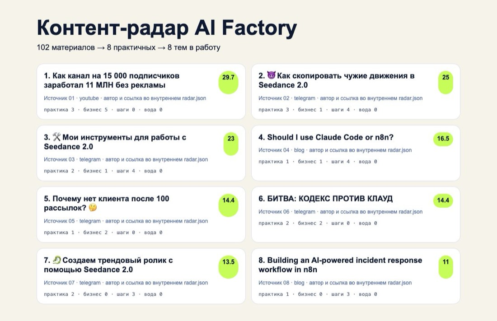
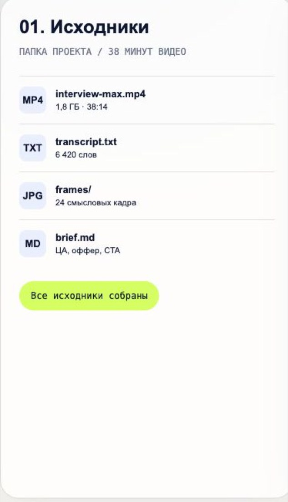
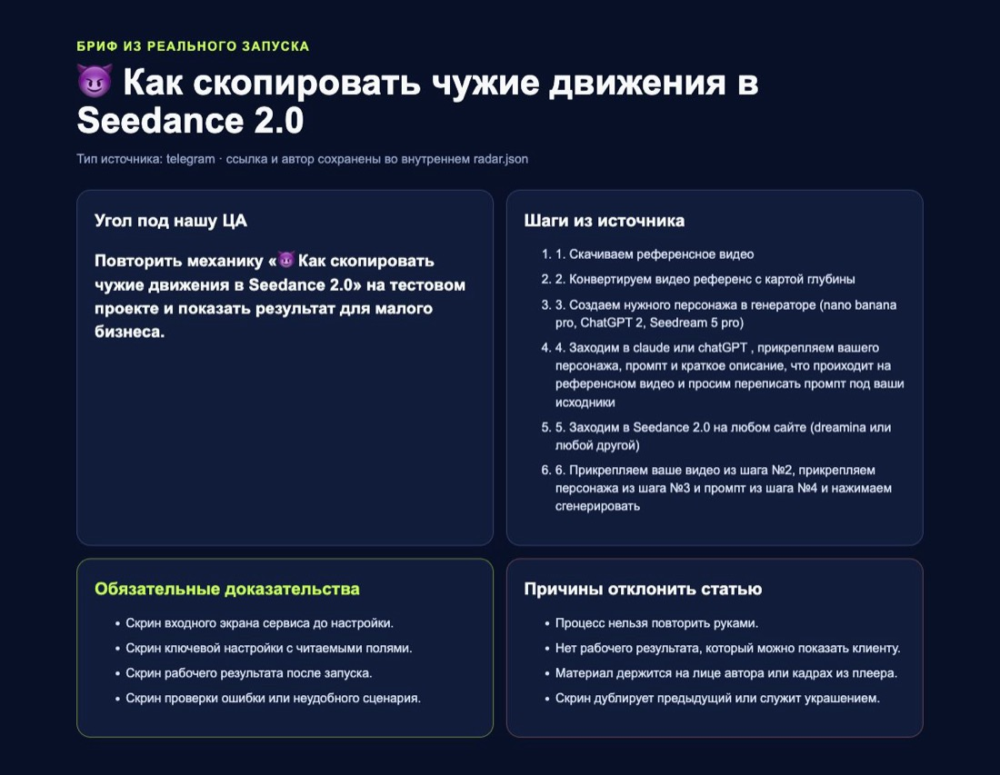

Эксперты и онлайн-школы платят 60-120 тысяч за то, чтобы темы приходили сами. Собрать такую систему можно по готовому проекту за вечер.
Ниже весь путь: от запуска на своём компьютере до ежедневного расписания, которое работает даже с выключенным ноутбуком.
Почему за это платят
Обычно редактор открывает десятки каналов, сохраняет ролики и к вечеру всё равно не понимает, о чём писать. Громкий заголовок легко принять за полезную тему, а внутри оказывается личная история. Система отбирает материалы, где есть конкретное действие и результат, и прикладывает ссылку на исходник.
Результат
Что выдаёт система
отчёт за один запуск

Один запуск: 102 материала прочитано, 8 тем прошли отбор. Редактор проверяет восемь исходников вместо сотни публикаций
Тема с исходником
Каждая идея привязана к ссылке на материал, из которого она взята.
Без дублей
Одна новость из десяти каналов остаётся одной темой, а не десятью строчками.
Только повторяемое
Личные истории и разговоры без конкретных действий опускаются вниз списка.
Подготовка
Что понадобится
ChatGPT с Codex
chatgpt.com/codex
Скачает проект, установит части, запустит проверки и сбор.
Node.js
nodejs.org
Версия 22 или новее. Ставится кнопкой LTS.
yt-dlp
github.com/yt-dlp
Нужен, чтобы система читала текст роликов. Codex поставит его сам.
Субтитры это текст того, что говорят в ролике. Система читает именно его, поэтому понимает содержание видео, а не только заголовок.
Запуск по расписанию значит, что сбор делает не твой компьютер, а сервис GitHub. Ноутбук в это время может быть выключен.
Сборка
Шесть шагов
1
Скачай проект и проверь запуск
Создай пустую папку, открой её в Codex и отправь задание ниже. После выполнения увидишь семь успешных проверок. Если что-то сломается, Codex уже видит файлы и текст ошибки, поэтому найдёт причину сам.
2
Замени источники на свою нишу
Открой automation/config/sources.json. Для первого запуска хватит пяти источников. Бери авторов, которые показывают процесс на экране и разбирают кейсы. Новостные каналы оставь, но не весь список.
3
Запусти сбор
Система прочитает источники, скачает доступные субтитры и соберёт отчёт в automation/data/RADAR.md. Внутри лучшие темы, ссылки и объяснение, почему каждая прошла отбор.
4
Разберись, почему тема прошла
Баллы даются за конкретное действие, задачу бизнеса, применимость новичком и наличие доказательства. Личная история без повторяемого процесса получает штраф. Таблица ниже.
5
Преврати тему в статью
Открой исходник и повтори процесс сам. Сохрани только те экраны, которые доказывают важный шаг. Лицо автора и кадры из его ролика в статью не идут.
6
Включи ежедневный запуск
Открой вкладку Actions в своём проекте на GitHub, выбери Content radar, нажми Enable workflow и Run workflow. Дальше GitHub собирает темы по расписанию, даже когда компьютер выключен.
Задание для Codex: скачать и проверить
Шаг 1 · можно копироватьСкачай проект командой git clone https://github.com/glebastashev/max-ai-guides.git. Перейди в папку max-ai-guides, выполни npm install и npm run content:test. Если проверка падает, найди причину и объясни её простыми словами. Файлы системы пока не меняй.
Задание: свои источники
Шаг 2 · можно копироватьОткрой automation/config/sources.json. Добавь мои источники и сохрани текущую структуру файла. Проверь, что у YouTube указан channelId, у Telegram указан username без ссылки, у блога указан адрес RSS. После правки запусти npm run content:test и покажи результат.
Задание: запустить сбор
Шаг 3 · можно копироватьПроверь, установлен ли yt-dlp. Если программы нет, установи её способом, который подходит моей операционной системе. Затем выполни node automation/run.mjs --transcripts. Открой automation/data/RADAR.md и кратко объясни, сколько материалов собрано, сколько тем прошло отбор и где лежат исходные ссылки.
исходные файлы

Настройки источников лежат в одном файле
Система читает текст роликов, а не только заголовки
Отбор
По каким правилам тема проходит
| Что найдено | Почему полезно |
|---|
| Конкретное действие: собрать, подключить, проверить | Можно превратить в инструкцию |
| Задача бизнеса: заявки, контент, продажи | Понятна ценность для клиента |
| Подходит новичку: с нуля, шаблон, готовая команда | Читатель сможет повторить |
| Есть доказательство: скрин, тест, результат | Материал вызывает доверие |
| Только мнение: история и мотивация | Опускается ниже |
Задание редактору на статью
Шаг 5 · можно копироватьИзучи исходный материал и выпиши результат для новичка. Затем повтори процесс сам. Статья должна содержать: 1) что человек соберёт; 2) зачем это бизнесу; 3) за что здесь платят; 4) пошаговые действия со ссылками; 5) готовые команды и тексты; 6) собственные скриншоты ключевых этапов; 7) проверку результата; 8) пример предложения клиенту. Удали термины, которые не помогают выполнить действие.
план будущей статьи

В плане сохранены исходник, шаги, факты для проверки и обязательные доказательства
Публикацию оставь ручной
Система экономит время на поиске. За факты, собственную демонстрацию и подачу отвечает редактор. Автопостинг здесь только испортит репутацию.
Продажа
Продавай регулярный выпуск, а не программу на GitHub
На встрече покажи отчёт за один день: сколько материалов система просмотрела, сколько тем оставила и почему. Затем открой один готовый план статьи с исходной ссылкой и списком действий.
Предложи пилот на две недели. Согласуйте источники, число тем, количество готовых статей и день выдачи отчёта. После пилота клиент посчитает время редактора и оценит качество по фактам.
| Что входит в услугу | Как считать |
|---|
| Разовая настройка источников и правил отбора | 60-120к |
| Ежедневный или еженедельный отчёт с темами | в абонентку |
| Согласованное число статей со своими демонстрациями | в абонентку |
| Ежемесячное обновление источников и правил | отдельной строкой |
Если не работает
Что чаще всего ломается
Проверка падает с красной ошибкой
Скопируй текст ошибки и отправь его же Codex со словами «вот ошибка, найди причину и исправь». Он видит файлы проекта и чинит сам. Разбираться в тексте ошибки самому не нужно.
Не читает ролики с YouTube
Не установлена программа для чтения текста роликов. Попроси Codex проверить её наличие и поставить нужным способом для твоей системы. Второй вариант: у канала нет субтитров, тогда система возьмёт только описание.
Отчёт пустой или слишком короткий
Мало источников или они новостные. Добавь каналы, где показывают процесс на экране и разбирают кейсы. На пяти источниках отчёт уже осмысленный, на одном почти всегда пустой.
В список лезет мусор и реклама
Скажи Codex: «подними штраф для материалов без конкретных действий и убери из выдачи рекламные посты». Правила отбора лежат в одном файле, и он их поправит.
Чек-лист перед отправкой отчёта клиенту
- Каждая тема открывается по ссылке на исходник
- Нет дублей одной новости под разными заголовками
- Убраны темы, которые нельзя повторить руками
- К каждой теме понятно, что именно писать
- Отчёт пришёл в тот день, о котором договаривались
Разговор с клиентом
Что отвечать на частые возражения
«Темы я и сам могу найти»
Можете. Вопрос в часах: система читает сотню материалов за ночь и оставляет восемь. Посчитайте, сколько стоит час вашего редактора, и сравните с абонентской платой.
«А тексты она тоже пишет?»
Тексты пишет человек, и это принципиально. Система даёт тему, ссылку и план. Если отдать ей ещё и написание, получите пересказ чужого материала без вашей экспертизы.
«Давайте сразу автопостинг»
Не советую. Один неточный факт в автопубликации бьёт по репутации сильнее, чем неделя без постов. Пусть публикует человек, а система экономит время на поиске.
«Сколько тем в неделю гарантируете?»
Зависит от ниши и числа источников. Давайте сделаем пилот на две недели, посмотрим на реальных цифрах и уже после этого зафиксируем норму в договоре.
Куда это приводит
Регулярный результат оплачивают регулярно
Эксперту и компании нужен стабильный поток материалов, которые приводят внимание и заявки. Такие услуги закрываются не одним платежом.
93 312 и 45 000 рублей
Два платежа за одну систему: запуск и регулярный выпуск. Так выглядит переход от разовой работы к сопровождению.

Александр, 24 года
Фриланс: карточки для маркетплейсов, съёмка, SMM
Три года на фрилансе с нестабильным доходом: то 40 тысяч, то сто, то пусто. Сейчас собирает контент и автоматизации для онлайн-школы на сопровождении.
3 годафриланса до старта
40-100кбыло нестабильно
200кбывает сейчас
Забрать бесплатный тест-драйв
5 уроков: разбираем рынок, собираем первую работу руками, проходим 7 способов найти клиента. Дошедшим до конца разбор и гайд по закрытию первого клиента.
Что делать дальше
Запусти систему на своей нише и собери первый отчёт. Дальше тому же клиенту предлагаешь ИИ-ассистента и сайт, а где искать заказчиков, разобрано в гайде про первые заказы.